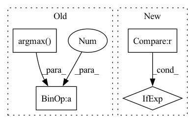

Pattern ID :5687
Before Change
if labels is not None:
// Prediction scores of the language modeling head (scores for each vocabulary token before SoftMax).
logits_gen = outputs_gen.logits // shape: (batch_size, sequence_length, config.vocab_size)
predict_ids = torch.argmax( logits_gen, dim=2) + 1
labels_disc = (predict_ids != labels).to(torch.long)
else:
labels_disc = None
After Change
output_attentions=None,
output_hidden_states=None, return_dict=None
):
return_dict = return_dict if return_dict is not None else self.config.use_return_dict
outputs_gen = self.generator(
input_ids=input_ids, attention_mask=attention_mask, token_type_ids=token_type_ids, In pattern: SUPERPATTERN
Frequency: 3
Non-data size: 4
Instances Fragment ID: 19988867
Project Name: retarfi/language-pretraining
Commit Name: a85c892e2f3cc1b1c4a448226509b6be977aca2a
Time: 2021-07-12
Author: valerososoccer@gmail.com
File Name: utils/model.py
M Class Name: ElectraForPretrainingModel
N Class Name: ElectraForPretrainingModel
M Method Name: forward(11)
N Method Name: forward(11)
M Parent Class: PreTrainedModel
N Parent Class: PreTrainedModel
M File Name: utils/model.py
N File Name: utils/model.py
M Start Line: 45
M End Line: 86
N Start Line: 45
N End Line: 87
Before Change
for i in range(len(y)):
for class_id in [int(x) for x in torch.unique(y[i])]:
y_pred_i = (y_pred[i].argmax( 0) == class_id).numpy()
y_i = (y[i] == class_id).numpy()
tp = np.logical_and(y_pred_i, y_i).sum()
y_pred_i_count = y_pred_i.sum()
y_i_count = y_i.sum()
self._evals[class_id]["dice"] += (2 * tp) / (y_pred_i_count + y_i_count)
self._evals[class_id]["count"] += 1
def compute(self):After Change
dice = (2 * tp_count + self.smooth) / (gt_count + pred_count + self.smooth)
classes_ids = [0] if self.average == "micro" else torch.unique(y[i]).tolist()
for class_id in [int(x) for x in classes_ids]:
self._evals[class_id]["dice"] += dice[class_id]
self._evals[class_id]["count"] += 1 Fragment ID: 19988871
Project Name: deepchecks/deepchecks
Commit Name: 2d0e3893155e7b4294f49917fedc1eed7d2531cb
Time: 2022-09-14
Author: 92314933+nirhutnik@users.noreply.github.com
File Name: deepchecks/vision/metrics_utils/semantic_segmentation_metrics.py
M Class Name: MeanDice
N Class Name: MeanDice
M Method Name: update(2)
N Method Name: update(2)
M Parent Class: Metric
N Parent Class: Metric
M File Name: deepchecks/vision/metrics_utils/semantic_segmentation_metrics.py
N File Name: deepchecks/vision/metrics_utils/semantic_segmentation_metrics.py
M Start Line: 40
M End Line: 51
N Start Line: 59
N End Line: 74
Before Change
max_outliers_ratio = max(round(max_outliers_ratio, 3), 0.001)
if quantiles_vector[int(1000 - max_outliers_ratio * 1000)] > outlier_score_threshold:
ratio_above_threshold = round((1000 - np.argmax( quantiles_vector > outlier_score_threshold) ) / 1000, 3)
details = f"{format_percent(ratio_above_threshold)} of dataset samples above outlier threshold"
return ConditionResult(ConditionCategory.WARN, details)
else:After Change
max_outliers_ratio: float = 0):
max_outliers_ratio = max(round(max_outliers_ratio, 3), 0.001)
score_at_max_outliers_ratio = quantiles_vector[int(1000 - max_outliers_ratio * 1000)]
category = ConditionCategory.WARN if score_at_max_outliers_ratio > outlier_score_threshold \
else ConditionCategory.PASS
quantiles_above_threshold = quantiles_vector > outlier_score_threshold
if quantiles_above_threshold.any(): Fragment ID: 19988872
Project Name: deepchecks/deepchecks
Commit Name: ddc6c0edf7fe008a1cbe2cab9dbef92316cfdfee
Time: 2022-05-22
Author: matan@deepchecks.com
File Name: deepchecks/tabular/checks/data_integrity/outlier_sample_detection.py
M Class Name: AnonimousClass
N Class Name: AnonimousClass
M Method Name: _condition_outliers_number(3)
N Method Name: _condition_outliers_number(3)
M Parent Class:
N Parent Class:
M File Name: deepchecks/tabular/checks/data_integrity/outlier_sample_detection.py
N File Name: deepchecks/tabular/checks/data_integrity/outlier_sample_detection.py
M Start Line: 182
M End Line: 187
N Start Line: 181
N End Line: 192